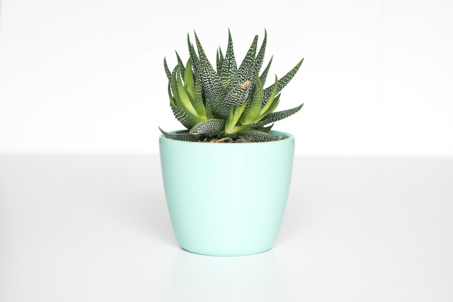

从一张图片，到一份干净的素材。上传、去底、下载，就这么简单。
人像 · 商品 · 植物 · Logo · 文字素材

图片始终留在你的设备中
AI 提取照片主体，纯色模式清除底色。两种方式，应对不同素材。
全部处理在浏览器中完成。无需填写 Key，图片不上传服务器。
对比、修边，再导出透明 PNG。用于设计、演示文稿与内容创作。
点击上传、拖入图片，或粘贴剪贴板中的图片。支持 JPG、PNG、WebP；一次处理一张，单张上限 25 MB。
照片使用 AI 主体抠图。Logo、文字与均匀底色使用纯色背景；选择背景色，调节容差。切换“整张图片的相似颜色”可清理文字内部的底色，也会影响主体中的同色区域。
用原图/结果/对比视图核对，放大检查边缘。擦除多余区域，恢复误删内容；支持撤销。默认导出透明 PNG，预览背景不会自动写入图片。
AI 会识别显著主体；透明物体、复杂发丝、多个主体和细线图表需要人工检查。首次 AI 处理下载约 55 MB 模型及运行文件，耗时取决于网络和设备。为控制内存，工作图片限制为最长边 4096 px 且不超过约 8 百万像素；超过限制会明确显示缩放后的尺寸。建议使用近期桌面版 Chrome 或 Edge。
放大后可滚动查看画布；画笔大小以画布上的显示像素为单位。Ctrl / ⌘ + Z 撤销最近一次修边，最多保留 8 步。模型加载失败时可重试，或使用不需要模型的纯色模式。
2026 年 10 月 27 日核查。以下是本次比较的 GitHub 项目；本工具接入 IMG.LY，纯色去底与交互编辑为本项目实现。
浏览器内背景移除。固定使用 @imgly/background-removal 1.7.0 与 IS-Net 量化模型，AGPL-3.0 许可。
Python 库、命令行与 HTTP 服务，多模型后端。适合服务器与批量处理；本页面未接入。
高分辨率前景分割研究项目，含多个模型版本；本页面未接入。
本项目源码以 AGPL-3.0 提供。ONNX Runtime Web 1.21.0 使用 MIT 许可。各项目的代码与模型许可应分别阅读。本页面直接提供模型与运行资源，处理过程不发送用户图片。
植物示例来自 Unsplash 图片素材；人像示例来自 rembg 官方示例目录。
点击保存下载 PNG；也可右键或长按上方图片保存。